Снятие и Установка аккумуляторной батареи
Процедура Снятие
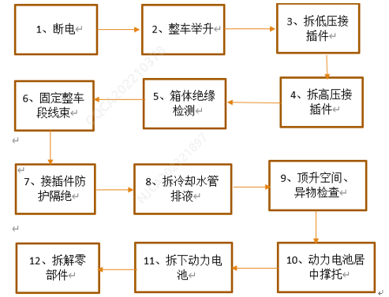
1) Подготовка к Снятие Требования: Перед Снятие всей аккумуляторной батареи необходимо переместить автомобиль на место ремонта и дождаться ремонта, отключить Питание автомобиля, отсоединить отрицательный провод аккумуляторной батареи автомобиля, чтобы автомобиль был обесточен. Использовать подъемник, чтобы поднять автомобиль на безопасную высоту, отсоединить низковольтный разъем, затем отсоединить разъем Выход высокого напряжения, разъем быстрой зарядки (после отсоединения разъемов Сторона жгута проводов и стороны аккумуляторной батареи их необходимо защитить во избежание попадания посторонних предметов и влаги; отсоединенные жгуты проводов следует закрепить поблизости, чтобы они не свисали и не пережимались), затем снять трубки охлаждающей жидкости, слить охлаждающую жидкость; Обратить Внимание, что жидкость следует слить как можно полнее, чтобы избежать ее вытекания в процессе разборки; при разборке сначала необходимо снять два центральных болта крепления аккумуляторной батареи M8, затем использовать подъемную платформу, чтобы подпереть нижнюю поверхность аккумуляторной батареи, расположив ее симметрично на платформе (как показано на Рисунке 5.4.1.1). Примечание: После отключения высокого напряжения необходимо проверить сопротивление изоляции корпуса; только при соответствии требованиям можно переходить к следующему этапу. Инструмент: динамометрический ключ, торцевая головка M8, поддон для сбора жидкости.
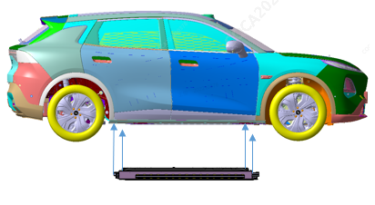
2) Меры предосторожности при Снятие
1. Отключить Питание автомобиля, отсоединить отрицательный провод аккумуляторной батареи, чтобы автомобиль был обесточен; 2. При подключении и отключении разъемов высоковольтных жгутов проводов необходимо надевать диэлектрические перчатки; 3. Во время Снятие не допускать ударов и царапин на прилегающих Компонент; 4. После Снятие болтов крепления верхней крышки аккумуляторной батареи к порогам персоналу запрещается находиться в салоне, чтобы избежать повреждения внутренних компонентов аккумуляторной батареи из-за Деформация верхней крышки под весом.
3) Снять аккумуляторную батарею в сборе Требования: После завершения подготовительных работ к разборке с помощью инструмента отвернуть 4 шестигранные гайки с фланцем M8 и 16 сборок из шестигранных болтов с фланцем M10 с плоскими шайбами, крепящих верхнюю крышку тяговой аккумуляторной батареи Примечание: Инструмент: динамометрический ключ предельного типа, торцевая головка M10 1).
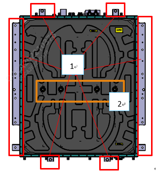
2) Снятие Компонент
Требования к Снятие штуцеров охлаждающей жидкости: снять 4 болта крепления штуцеров охлаждающей жидкости к основанию аккумуляторной батареи, после чего изделие можно снять. (Как показано на Рисунке 5.4.2.1) Снять штуцеры охлаждающей жидкости.
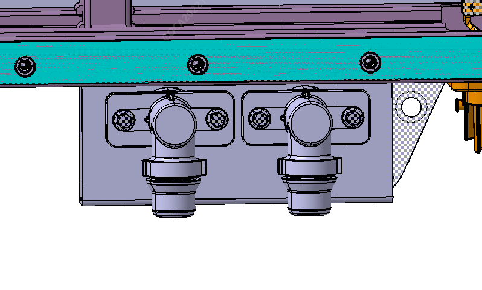
Примечание: Болты после Снятие, как правило, подлежат замене, но если они не повреждены, рекомендуется использовать их не более 3 раз.2) Снять взрывозащищенный клапан
Требования: снять 2 болта крепления взрывозащищенного клапана к основанию аккумуляторной батареи, после чего изделие можно снять. (Как показано на Рисунке 5.4.2.2) Снять взрывозащищенный клапан
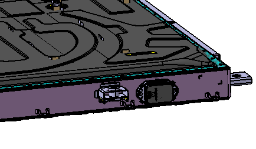
Примечание: Болты после Снятие, как правило, подлежат замене, но если они не повреждены, рекомендуется использовать их не более 3 раз. 1) Снять верхнюю крышку тяговой аккумуляторной батареи
3) Снять верхнюю крышку тяговой аккумуляторной батареи
Снять 64 болта M5 по периметру, 2 гайки M5, 4 центральные гайки M20, после чего изделие можно снять (как показано на Рисунке 5.4.2.3-1
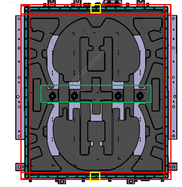
Внутренний вид аккумуляторной батареи после Снятие (как показано на Рисунке 5.4.2.3-2)
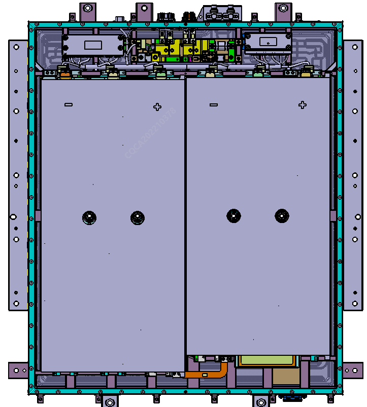
Примечание: Если крепежные болты верхней крышки повреждены после Снятие, их необходимо заменить. Если после Снятие верхней крышки уплотнение корпуса повреждено или не восстанавливает свою форму, что приводит к нарушению герметичности, его необходимо заменить; процедура замены подробно описана в разделе "3.3.5.5 - (2) Проверка и замена уплотнения корпуса и верхней крышки".
4) Снять алюминиевую шину (соединение модулей III)
Опасность высокого напряжения, соблюдайте осторожность! Алюминиевая шина (соединение модулей II) - 2101352-FQ11 является безопасной алюминиевой шиной для Снятие; ее следует снимать в первую очередь, а при Установка устанавливать в первую очередь!
Требования: снять 4 болта крепления алюминиевой шины к модулям, после чего изделие можно снять. (Как показано на Рисунке 5.4.2.4)
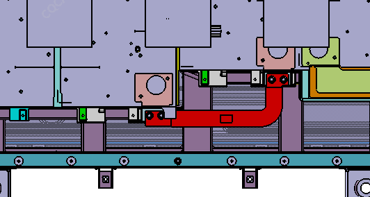
Примечание: Болты крепления к модулям после Снятие, как правило, подлежат замене, но если они не повреждены, рекомендуется использовать их не более 3 раз.
5) Снять алюминиевую шину (соединение модулей I)
Требования: снять 2 болта крепления алюминиевой шины к полюсам Выход модулей, 1 болт крепления алюминиевой шины к высоковольтному распределительному блоку, после чего изделие можно снять. (Как показано на Рисунке 5.4.2.5)
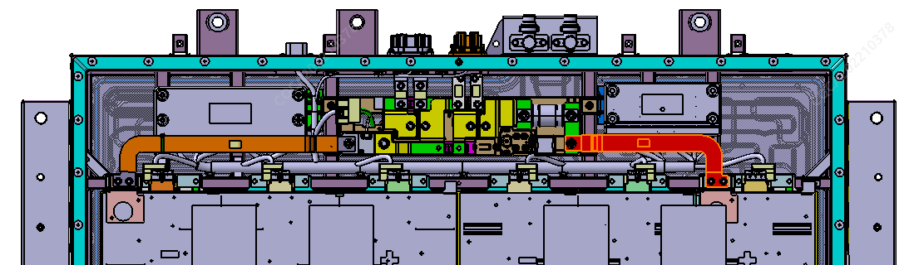
Примечание: Болты после Снятие, как правило, подлежат замене, но если они не повреждены, рекомендуется использовать их не более 3 раз. 5
6) Снять алюминиевую шину (соединение модулей II)
Требования: снять 2 болта крепления алюминиевой шины к полюсам Выход модулей, 1 болт крепления алюминиевой шины к высоковольтному распределительному блоку, отсоединить защелку самой алюминиевой шины от кронштейна корпуса, после чего изделие можно снять. (Как показано на Рисунке 5.4.2.6)
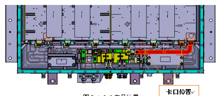
Примечание: Болты после Снятие, как правило, подлежат замене, но если они не повреждены, рекомендуется использовать их не более 3 раз.
7) Снять болты Установка BMS
Требования: снять 8 болтов Установка кронштейна BMS (как показано на Рисунке 5.4.2.7), после чего изделие можно снять, что облегчит последующую разборку жгута проводов.

Примечание: Болты после Снятие, как правило, подлежат замене, но если они не повреждены, рекомендуется использовать их не более 3 раз.
8) Отсоединить FPC, высоковольтный распределительный блок и соединительный жгут проводов главной и дочерней плат
Требования: сначала отсоединить разъем между высоковольтным распределительным блоком и низковольтным жгутом проводов всего блока, затем отсоединить жгут проводов главной платы BMS (J6→J5→J4→J3→J2→J1), затем отсоединить соединительный жгут проводов дочерних плат BMS (J4→J3→J2→J1), и наконец, отсоединить жгут проводов FPC. Как показано на рисунке ниже
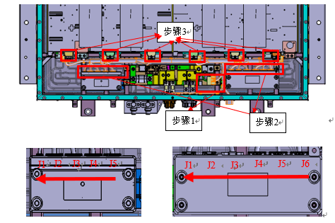
9) (Выход плюс & минус) и алюминиевая шина (переходник быстрой зарядки II)
Требования: выполнить Снятие 8 болтов крепления алюминиевой шины к разъему, а также алюминиевой шины к высоковольтному распределительному блоку, после чего изделие можно снять. (Как показано на Рисунке 5.4.2.10)

Примечание: Болты после Снятие, как правило, подлежат замене, но если они не повреждены, рекомендуется использовать их не более 3 раз.
10) Снятие высоковольтного распределительного блока аккумуляторной батареи
Требования: выполнить Снятие 4 болтов Установка основания высоковольтного распределительного блока аккумуляторной батареи (как показано на Рисунке 5.4.2.11), после чего изделие можно снять

Примечание: Болты после Снятие, как правило, подлежат замене, но если они не повреждены, рекомендуется использовать их не более 3 раз.
11) Снятие жгута проводов сбора Сигнал в сборе
Требования: после выполнения операций согласно требованиям "Снятие системы управления аккумуляторной батареей, BDU", сначала снять 4 болта низковольтного разъема связи, затем отсоединить жгут проводов блокировки у высоковольтного разъема, и, наконец, использовать съемник клипс, чтобы извлечь кабельные стяжки жгута проводов на кронштейне жгута проводов, после чего изделие можно снять (как показано на Рисунке 5.4.2.13).
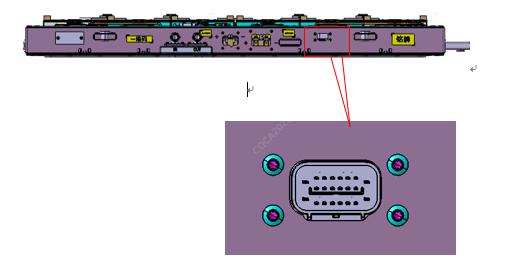
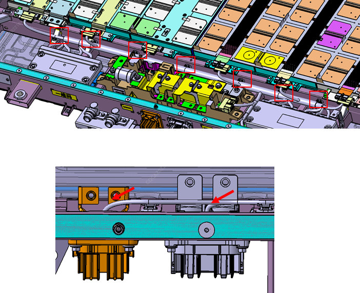
Требования: если клипсы жгута проводов были извлечены, при последующей Установка необходимо заменить поврежденные
12) Снятие высоковольтного разъема в сборе
Требования: выполнить Снятие 8 болтов Установка, после чего изделие можно снять (как показано на Рисунке 5.4.2.14)
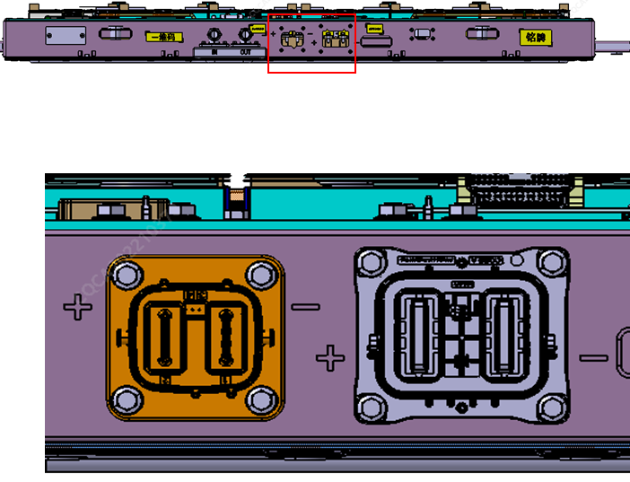
Примечание: Болты после Снятие, как правило, подлежат замене, но если они не повреждены, рекомендуется использовать их не более 3 раз.
13) Схема разъемов и низковольтных жгутов проводов
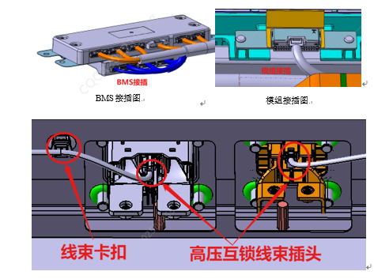
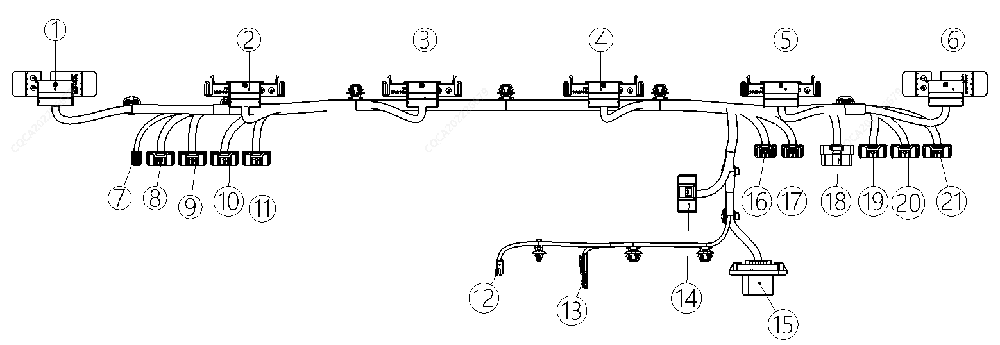
|
1 |
К модулю 6 |
|
2 |
К модулю 5 |
|
3 |
К модулю 4 |
|
4 |
К модулю 3 |
|
5 |
К модулю 2 |
|
6 |
К модулю 1 |
|
7 |
К CMU-J1 |
|
8 |
К CMU-J2 |
|
9 |
К CMU-J3 |
|
10 |
К CMU-J4 |
|
11 |
К CMU-J5 |
|
12 |
К блокировке высоковольтного разъема Выход |
|
13 |
К блокировке разъема быстрой зарядки |
|
14 |
К интегрированному BDU |
|
15 |
К низковольтному жгуту проводов автомобиля |
|
16 |
К BMS-J1 |
|
17 |
К BMS-J2 |
|
18 |
К BMS-J3 |
|
19 |
К BMS-J4 |
|
20 |
К BMS-J5 |
|
21 |
К BMS-J6 |
Примечание: Если болты и гайки повреждены после Снятие, их необходимо заменить.
14) Снятие и Установка влагопоглощающей пластины
Требования: после завершения ремонта и тестирования аккумуляторной батареи, перед сборкой сервисной крышки, заменить влагопоглощающую пластину внутри блока. Требования к замене: после распаковки и приклеивания влагопоглощающей пластины необходимо завершить сборку сервисной крышки аккумуляторной батареи в течение 2 h. Расположение для замены см. на Рисунке 5.4.2.16

Примечание: Если болты повреждены после Снятие, их необходимо заменить
Выполнять операции в порядке, обратном "Процедуре Снятие".
1) Доливка охлаждающей жидкости. После Снятие всего блока необходимо заново залить антифриз в автомобиль и удалить воздух, убедившись, что уровень жидкости находится между отметками MAX и MIN; требования см. в руководстве автомобиля "Заливка охлаждающей жидкости в низкотемпературную систему".
2) После каждого Снятие крышки для ремонта аккумуляторной батареи в сборе перед закрытием крышки необходимо проверить и убедиться, что уплотнитель по всему периметру корпуса не имеет видимых повреждений; если есть повреждения, его необходимо заменить, конкретные шаги следующие: 1) Удалить старый уплотнитель, оторвав его вручную или соскоблив тефлоновым скребком; на уплотнительной поверхности корпуса не должно быть явных остатков уплотнителя; 2) Развернуть новый уплотнитель и ровно уложить его на уплотнительную поверхность корпуса в правильном направлении и положении (клейкой стороной вниз); 3) Последовательно снять защитную бумагу с клейкой стороны уплотнителя в порядке: сначала четыре угла, затем остальные части, и прижать его к корпусу. Внимание: уплотнитель не должен закрывать поверхность головок заклепочных гаек на корпусе аккумуляторной батареи. 4) Замена влагопоглощающей пластины: после каждого Снятие крышки для ремонта аккумуляторной батареи в сборе перед закрытием крышки необходимо наклеить новую влагопоглощающую пластину; в процессе Установка допускается повторное наклеивание ≤ 1 раз, и закрытие крышки должно быть завершено в течение 2 h.
3) Проверка: 1. Автомобиль должен пройти комплексную электрическую проверку, проверку изоляции автомобиля, проверку безопасности постоянного тока, проверку электронного впрыска 2. Дорожные испытания: проверка на наличие посторонних шумов, проверка уровня антифриза. 3. После Снятие и ремонта основания тяговой аккумуляторной батареи и его обратной сборки необходимо повторно провести проверку герметичности всего блока. 4. После Снятие всего блока необходимо заново залить антифриз в автомобиль и удалить воздух, убедившись, что уровень жидкости находится между отметками MAX и MIN; требования см. в руководстве автомобиля "Заливка охлаждающей жидкости в низкотемпературную систему".